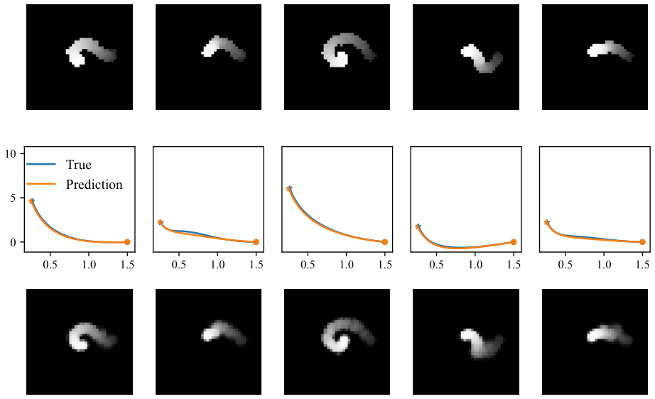
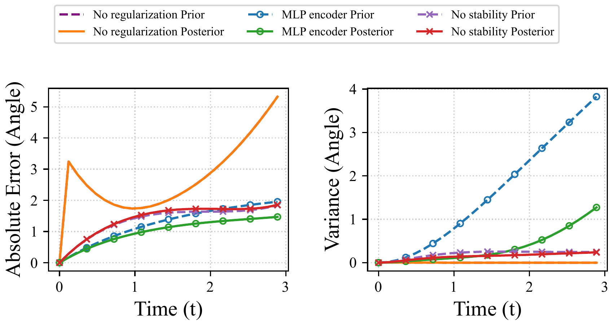
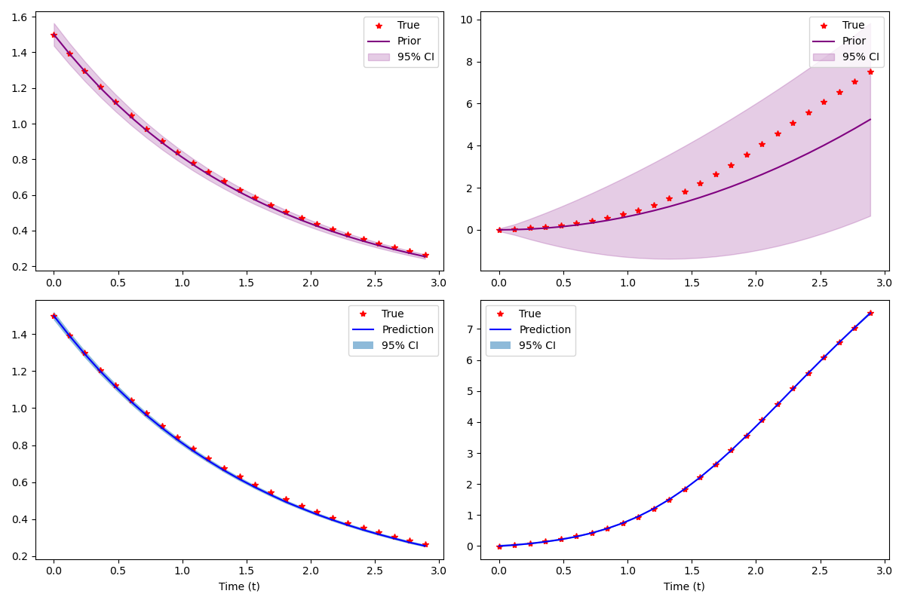

IEEE CDC 2026 Accepted paper · arXiv v2
Stability Enhanced Gaussian Process Variational Autoencoders
1 Department of Engineering Science, University of Oxford
2 Pacific Northwest National Laboratory
3 Johns Hopkins University
* Equal contribution
Learning interpretable dynamics from video—with stability built into the model.
A variational autoencoder connects pixels to a Gaussian process derived from a linear dynamical system. A structured parameterization keeps the learned latent dynamics semi-contracting throughout training.


From what a camera sees to how a system evolves
A video can reveal a physical process without directly measuring its state. Learning a compact representation is only part of the challenge: the latent model should also describe the dynamics and their uncertainty.
The stability-enhanced Gaussian process variational autoencoder (SEGP-VAE) combines an image encoder and decoder with a dynamical Gaussian process (GP) prior. Its mean and covariance follow from a linear time-invariant (LTI) system, including uncertain initial conditions and a stochastic input.
Research summary of Sections III–V. The model assumes a Gaussian input process with known mean and covariance, Gaussian initial conditions independent of that input, and Gaussian latent observation noise.
A dynamical model inside the GP
The state \(\mathbf{x}\) evolves continuously in time; \(\mathbf{y}\) is the latent output connected to the images. The system’s analytical solution defines the GP prior.
Theorem 1 derives both functions from \(A,B,C,D\), the input process, and the initial-state distribution. This gives the covariance a dynamical interpretation.
Encode observations. Condition the dynamics. Reconstruct the video.
The graphical abstract follows the inference path below. During offline training, reconstruction and distribution-matching losses connect all stages so the encoder, decoder, and GP parameters learn together.
Encode each frame
The encoder produces a latent mean and a positive diagonal covariance. These act as noisy latent observations, rather than directly measured physical states.
Condition the GP
Combine those observations with the LTI-derived prior using Gaussian conditioning. The result is a tractable variational posterior over a temporally connected latent trajectory.
Sample and decode
Draw latent samples with the reparameterization trick and pass them through the decoder. For the binary videos in this study, the decoder parameterizes a Bernoulli image likelihood.
Learn the complete model
Jointly train the encoder, decoder, and dynamical parameters with reconstruction, Kullback–Leibler (KL) regularization, and a task-specific penalty. The particle example adds an \(L_1\) penalty on \(A\).
Stability is built into the parameters
Constructing the state matrix from triangular and skew-symmetric factors makes the semi-contraction condition hold by construction. Training can use an unconstrained optimizer while staying within this class of dynamics.
For two trajectories driven by the same input, distance in the learned \(P\)-metric cannot increase. Semi-contraction allows marginal modes; it does not require exponential convergence.
Theorems 2–3 and Appendix A. \(V_1\) is lower triangular with positive diagonal, \(V_2\) is lower triangular with nonnegative diagonal, and \(V_3^{\top}=-V_3\).
What makes the particle example work
The case-study encoder uses convolutional features and a spatial softmax to locate the particle, then converts its position to polar coordinates and unwraps the angle over time. Learned scaling and uncertainty produce the GP observations. This coordinate-aware encoder and the \(L_1\) penalty help recover meaningful internal dynamics from a system whose input–output behavior alone does not identify a unique state-space realization.
The general method is in Sections IV–V; the polar encoder, regularization, and known \(B,C,D\) structure are case-study choices in Section VI.
Recovering the dynamics behind a spiralling particle
The full model recovers the latent dynamics with a reported state-matrix 2-norm error of 0.02—while reconstructing the observed motion.
The study uses simulated particle videos: 40,000 sequences, each with 25 binary frames at 40 × 40 pixels. A two-dimensional state tracks radius and angle. The true dynamics have radial decay and an input-driven angle; \(B,C,D\) are known while \(A\) is learned.


Stability, coordinates, and regularization each matter
Three ablations isolate the stability parameterization, the specialized encoder, and the state-matrix penalty. Several alternatives approximate the transfer function, yet recover different internal dynamics. The complete model gives the smallest state-matrix error in this experiment.
| Model | Change from full model | \(\|\hat A-A_i\|_2\) |
|---|---|---|
| SEGP-VAE | Full method | 0.02 |
| PEGP-VAE | No stability parameterization | 0.63 |
| MLP2-VAE | Replace specialized encoder with a multilayer perceptron | 0.63 |
| NREG-VAE | No state-matrix regularization | 2.53 |
The metric is the matrix spectral norm, with \(\hat A=\operatorname{diag}(-0.6,0)\). The paper does not specify aggregation over repeated training runs, or report hardware, batch size, or repeated-run uncertainty for this comparison.


Video observations refine the latent prediction
Conditioning the dynamical prior on encoded images sharpens the latent estimate. The original example below separates the prior from the posterior and retains the reported uncertainty bands.


Results and figures: arXiv v2, Section VI-D and Table I. Original paper figures are reproduced under CC BY 4.0; no experimental curves have been regenerated.
What the results establish
- A guarantee about the latent dynamics. The parameterization enforces semi-contraction in a positive-definite metric. It does not guarantee correct identification, bounded responses to arbitrary inputs, or stability of a downstream controller.
- An interpretable model with prior structure. The general formulation allows trainable \(B,C,D\); the particle experiment fixes them and uses a polar-coordinate encoder. Stability alone is insufficient to recover the physical coordinates.
- A simulated video study. The evaluation concerns one particle system, with no physical control deployment or broad video benchmark. Learning nonlinear dynamics through Koopman observables and reducing GP cost with sparse approximations remain future directions.
Explore the paper and implementation
The COPIP repository provides PyTorch implementations of the GP and variational autoencoder, a synthetic-data generator, and released model weights. Its README describes the training workflow.
Paper and implementation versions
This page follows arXiv v2, revised 18 September 2026. The paper is listed in the official IEEE CDC 2026 program; the citation below identifies the available preprint. Some released code defaults differ from the manuscript. The repository’s internal source map records these differences; the figures and table here report the paper’s experiments.
Citation
@misc{richardson2026stability,
title = {Stability Enhanced Gaussian Process Variational Autoencoders},
author = {Carl R. Richardson and Jichen Zhang and Ethan King and J{\'a}n Drgo{\v{n}}a},
year = {2026},
eprint = {2604.09331},
archivePrefix = {arXiv},
primaryClass = {cs.LG},
doi = {10.48550/arXiv.2604.09331},
url = {https://arxiv.org/abs/2604.09331v2}
}